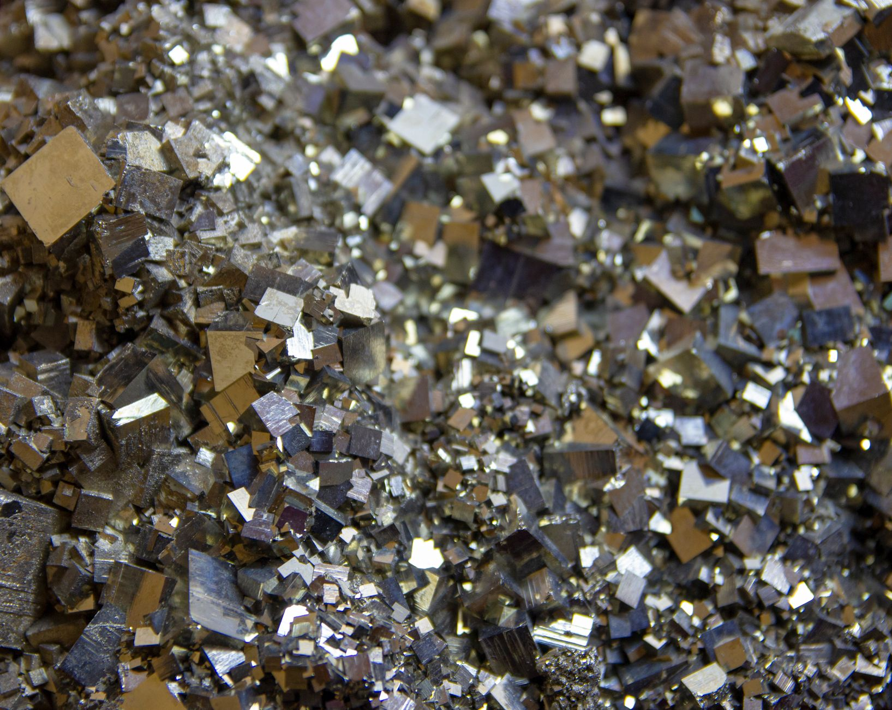

NBR '韓 핵심광물 균형외교 3대 압박' 경고

NBR(미국 아시아리서치국)이 2026년 9월 발간한 'South Korea's Critical Minerals Balancing Act' 보고서는 한국의 갈륨·게르마늄·희토류 대중 수입 의존도가 품목별 60~90%에 달한다고 측정했다. 미국의 디리스킹 압력과 중국의 공급 무기화가 동시에 작동하는 이중 압박 구조라는 분석이다.
한국은 카자흐스탄·우즈베키스탄 등 중앙아시아 5개국과 핵심광물 협력 공동선언에 서명했지만, NBR은 단기(2~3년) 내 실제 대체 조달 가능 물량이 국내 수요의 10% 이하로 추정된다고 명시했다. 카자흐스탄 크롬 연 15만 톤, 우즈베키스탄 우라늄 3,400톤 규모의 구속력 있는 계약 구조가 선행돼야 한다는 조건이다.
NBR은 한국이 '친공급망(pro-supply chain)' 전략 실행에 필요한 세 가지 조건—자국 정제·처리 역량, 동맹국 3년 이상 장기 구매 계약, 전략 비축 6개월 이상—을 모두 충족하지 못하고 있다고 지적했다. 현재 한국의 갈륨·게르마늄 비축은 평균 2~3개월 수준으로 추정된다.
고려아연의 갈륨 국내 생산(2028년 연 15.5t)이 현실화돼도 한국 연간 수요 추정치 40~50t의 30~40%에 불과하다. LG화학·포스코 등의 희토류 내재화 투자가 가시화되지 않으면 나머지 60~70%는 여전히 중국 또는 제3국 중개 물량에 의존한다.
핵심광물 외교는 선언이 아닌 계약 구조로 평가해야 한다. 다변화 파트너로 거론되는 중앙아시아·호주·캐나다산 물량이 실제 한국 산업 수요를 충당하려면, 품목별 연간 물량과 가격 상한을 명시한 구속력 있는 장기 계약이 선행돼야 한다. 현 단계는 MOU 수준의 의향서로 공급망 안보를 갈음하는 상태다.
비축 격차는 협상력 격차로 직결된다. 미국·일본·EU의 전략 비축 기준이 6~12개월인 반면 한국이 2~3개월 수준에 머무는 한, 중국이 수출통제를 강화할 때마다 한국은 가격 수용자 위치에 놓인다. 비축 확충 없이는 대중 협상에서 레버리지가 없다.
호주가 가장 직접적인 반사이익을 본다. 호주는 갈륨 생산 확대 프로젝트를 통해 연 30t 이상 공급 여력을 2027년까지 확보할 계획이며, 한국 수요처들이 이 물량의 우선 구매 협상을 이미 진행 중인 것으로 파악된다. 친서방 원산지 인증까지 받아 미국 IRA 적합성 요건도 충족한다.
국내 핵심광물 정제·재처리 기업의 밸류에이션 재평가가 나타날 수 있다. NBR 보고서가 '자국 정제 역량 부재'를 핵심 결함으로 지목한 만큼, 정부 정책 자금과 민간 투자가 이 분야에 집중될 가능성이 높다. 고려아연 외에 소규모 정제 기술 보유 기업들이 M&A 타깃으로 부각될 수 있다.
갈륨 기반 GaN 소재 수입 의존도가 높은 반도체·통신 부품 기업들이 직격탄을 맞는다. 갈륨 kg당 2,000달러 수준이 유지될 경우 연간 소재 조달 원가가 2021년 대비 9배 증가해 원가 구조 자체가 붕괴된다. 자체 비축이 없는 기업은 현물 시장에서 그대로 노출된다.
중국산 중간재를 활용해 미국 수출 완성품을 만드는 소부장 기업도 리스크가 커진다. TSMC·인텔 공급망 심사에서 중국산 소재 포함 여부를 점검하는 추세가 강화되고 있어, 원산지 관리가 미흡한 기업은 공급망 자격 재심 대상이 된다.
핵심광물 조달 담당자는 지금 당장 보유 계약 포트폴리오에서 중국산 비중을 품목별로 수치화해야 한다. 미국 수출통제(EAR) 적용 시 조달이 차단될 수 있는 품목을 별도 목록으로 관리하고, 대체 공급선 확보에 소요되는 리드타임을 현실적으로 계산해야 한다.
호주·캐나다산 갈륨·게르마늄 대체 계약은 최소 3년 이상 장기 구조로 접근해야 한다. 단기 현물 계약은 공급 불안 시기에 가격 급등에 그대로 노출되며, 장기 계약이 없으면 비축 확충도 원가 예측도 불가능하다.
NBR이 지목한 비축 격차—주요국 6~12개월 대비 한국 2~3개월—는 협상력 열위로 직결된다. 구매 기업 단위에서라도 6개월치 안전 재고 목표를 설정하고, 보관 비용과 조달 리스크 비용을 명시적으로 비교하는 내부 기준을 마련해야 한다.
실제 조달 현장에서는 — 올해 들어 중간 무역상들이 갈륨·게르마늄의 원산지를 제3국 경유로 위장 유통하는 사례가 증가하고 있다. 중국산 소재가 동남아·중동 경유 서류로 둔갑해 납품되는 경우가 포착되므로, 공급업체의 원산지 증명 서류를 최소 분기별로 재검증하고 현지 실사 조항을 계약에 명시해야 한다.
이 포스팅은 쿠팡 파트너스 활동의 일환으로 수수료를 제공받습니다.